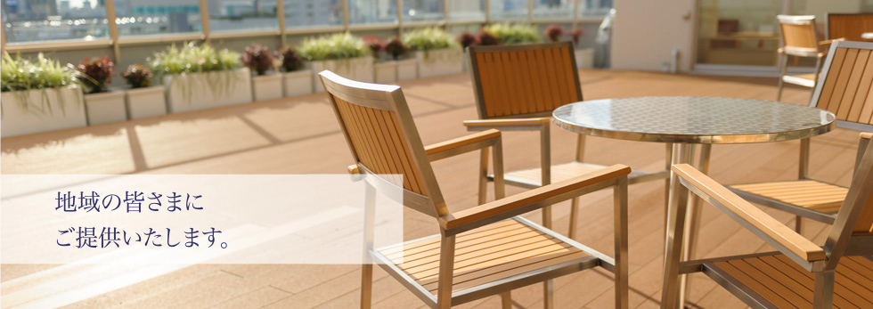

〒731-0113 広島県広島市安佐南区西原8丁目33−3
メールアドレス：dai14hirokoku@docomo.ne.jp
📞
083-000-0000

- 内科
- 手術ではなく薬剤を使った治療を専門的に行うもので、主に、内臓・血液・神経などを中心に治療します。
- 外科
- 手術による治療を専門的に行う、内臓・神経・骨・関節・皮膚・歯など患部を治療します。
- 整形外科
- 運動機関を構成する全ての組織、骨や軟骨、筋、靱帯、神経などの疾病・外傷を対象し、その病態の解明と治療法の開発及び診療を行う専門領域です。
- 形成外科
- 身体に生じた組織の異常や変形、欠損などに対して、機能的及び携帯的に改善を目指す外科領域です。主な疾患として、交通事故や労働時の事故などに寄る外傷などが対象として当てはまります。
内科・外科・整形外科・形成外科
診察時間 午前の部；9:30~12:30
午後の部：14:00~18:00
診察時間 午前の部；9:30~12:30
午後の部：14:00~18:00
休診：水曜日 午後・日曜日・祝日・GW・年末年始
| 診察日 | 月 | 火 | 水 | 木 | 金 | 土 |
|---|---|---|---|---|---|---|
| 午前 9:30~12:30 | ● | ● | ● | ● | ● | ● |
| 午後 14:00~18:00 | ● | ● | ● | ● | ● |
ニュース
- 2020年1月28日
[2月の診察日]2月15日は、学会の発表の為、休診させて頂きます。
- 2020年1月21日
ホームページを更新しました。
- 2020年12月20日
[年末年始の休診について]12月29日から1月3日まで、誠に申し訳ありませんが、休診とさせていただきます。
内科・外科・整形外科・形成外科
診察時間 午前の部；9:30~12:30
午後の部：14:00~18:00
診察時間 午前の部；9:30~12:30
午後の部：14:00~18:00
休診：水曜日 午後・日曜日・祝日・GW・年末年始
| 診察日 | 月 | 火 | 水 | 木 | 金 | 土 |
|---|---|---|---|---|---|---|
| 午前 9:30~12:30 | ● | ● | ● | ● | ● | ● |
| 午後 14:00~18:00 | ● | ● | ● | ● | ● |
ニュース
| 2020年1月28日 | [2月の診察日]2月15日は、学会の発表の為、休診させて頂きます。 |
|---|---|
| 2020年1月21日 | ホームページを更新しました。 |
| 2020年12月20日 | [年末年始の休診について]12月29日から1月3日まで、誠に申し訳ありませんが、休診とさせていただきます。 |
住所：広島県広島市安佐南区西原8丁目33−3
ロゴマーク；https://www.kokuho-hp.or.jp/about/4
病院のイメージ写真:http://www.jrhh.or.jp/
内科と外科の違い：https://www.zenri-clinic.com/column/497
整形外科の説明：https://www.joa.or.jp/edu/peculiarity/peculiarity_01.html#:~:text=%E9%81%8B%E5%8B%95%E5%99%A8%E5%AE%98%E3%82%92%E6%A7%8B%E6%88%90%E3%81%99%E3%82%8B,%E3%81%AA%E3%81%A9%E5%BA%83%E7%AF%84%E5%9B%B2%E3%81%AB%E5%8F%8A%E3%81%B3%E3%81%BE%E3%81%99%E3%80%82
形成外科の説明：https://www.kanto-ctr-hsp.com/ill_story/201811_byouki.html#:~:text=%E6%95%B4%E5%BD%A2%E5%A4%96%E7%A7%91%E3%81%A8%E3%81%AE%E9%81%95%E3%81%84,%E3%82%92%E7%9B%AE%E6%8C%87%E3%81%99%E5%A4%96%E7%A7%91%E9%A0%98%E5%9F%9F%E3%81%A7%E3%81%99%E3%80%82&text=%E9%A1%94%E3%81%AE%E5%A4%89%E5%BD%A2%E3%82%84%E3%82%B1%E3%82%AC,%E5%BD%A2%E6%88%90%E5%A4%96%E7%A7%91%E3%81%8C%E5%8F%96%E3%82%8A%E6%89%B1%E3%81%84%E3%81%BE%E3%81%99%E3%80%82